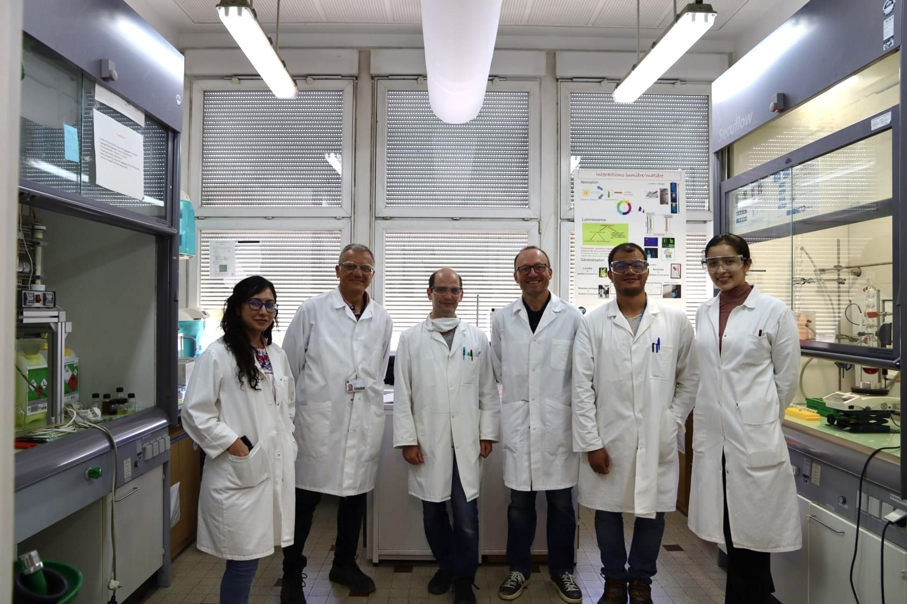
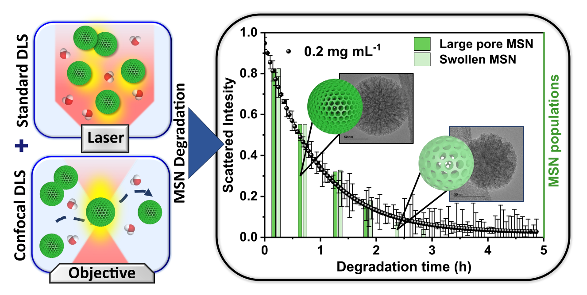
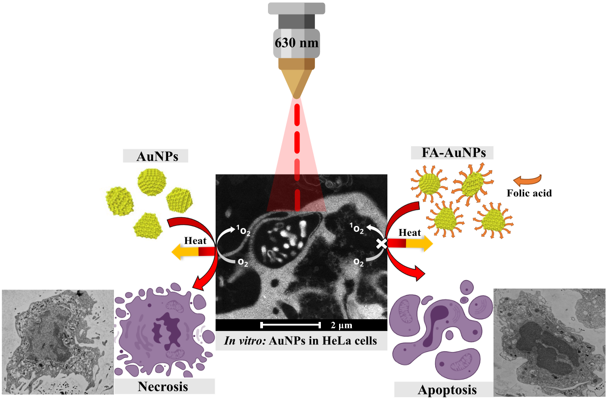
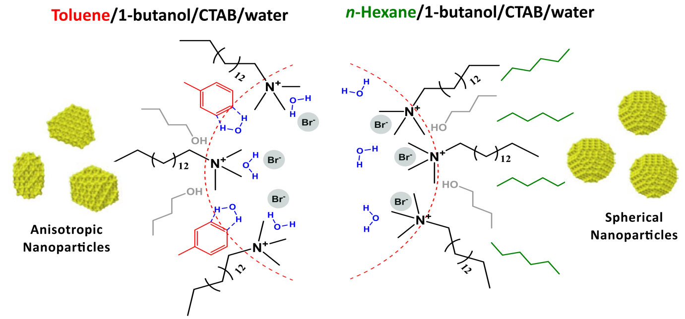

Hej! I’m Valentina, a PhD student in Materials Science at Linköping University, Sweden, where I am part of the Department of Physics, Chemistry, and Biology (IFM)/NANO, funded by the Swedish Research Council. My research focuses on understanding the formation mechanisms of mesoporous silica materials for drug delivery applications. To untangle these processes, I employ synchrotron-based Small-angle X-ray Scattering (SAXS) alongside other in situ techniques, such as Attenuated Total Reflection Fourier-Transform Infrared Spectroscopy (ATR-FTIR). These tools allow me to study the intricate structural evolution and assembly mechanisms driving material formation.
Originally from Colombia, I discovered my passion for materials science and nanotechnology during my undergraduate studies in Chemistry at the Universidad Industrial de Santander. In 2019, I earned my Bachelor’s degree, where I conducted research on the optical properties of gold nanoparticles and their applications in medical diagnosis and therapy. My bachelor’s thesis centered on using gold nanoparticles as photothermal agents for treating cervical cancer. Throughout my thesis, I had the opportunity to learn from different international collaborators, including transmission electron microscopy and confocal microscopy from Dr Olga Araceli Patrón Soberano, photothermal therapy from Dr Vicente Rodríguez González, and cell culture studies from Prof. Stelia Carolina Méndez Sánchez.
In 2020, I moved to France to pursue a Master's degree in Nanochemistry at Université Grenoble Alpes. For my master’s thesis, I joined the Institut Néel–CNRS under the guidance of Dr Xavier Cattoën. My work focused on developing mesoporous silica nanoparticles as nanocarriers for antimicrobial peptides, addressing the urgent challenge of antibiotic resistance. I explored innovative synthetic approaches to create large-pore mesoporous silica particles with enhanced hydrolytic stability, optimizing their potential for delivering diverse biomolecules. This research also involved collaborating with Dr Aude Barbara, where I gained experience in light scattering techniques and correlation spectroscopies to study particle degradation under conditions mimicking biomedical environments relevant to drug delivery applications.

The NanoAndes international research network at the Institut Néel, led by Dr Xavier Cattoën (middle),
Dr Alain Ibanez (left), and Yoann Roupioz (right). The network promotes interdisciplinary collaborations in materials science between Europe and Latin America.
E. Zattarin, W. B. Kebede, Z. Sotra, R. Shamasha, A. Starkenberg, V. Guerrero-Florez, L. P. Khare, T. Bengtsson, H. Khalaf, E. M. Björk, J. Rakar, J. P. E. Junker, D. Aili, Bioactive Materials, 150-171 (2026).
Enzyme‑responsive BC–HA hybrid hydrogel dressing incorporating SOAP‑loaded mesoporous silica nanoparticles (MSNs) for localized treatment of infected wounds. The HA matrix and peptide linker enable infection‑triggered degradation by bacterial proteases and hyaluronidases, releasing the antimicrobial peptide only when pathogens are present. This design overcomes major limitations of AMPs by providing controlled on‑demand delivery, strong activity against clinical S. aureus, and accelerated re‑epithelialization in a porcine wound model.
V. Guerrero-Florez, E. Zattarin, L. P. Khare, E. Wiman, T. Bengtsson, H. Khalaf, J. P. E. Junker, L. Ojamäe, M. Odén, D. Aili and E. M. Björk, Journal of Colloid and Interface Science, 139151 (2025).
BSA-capped amino-functionalized mesoporous silica SBA-15 enables protease-triggered, sustained non-Fickian release of the sequence-optimized antimicrobial peptide SOAP. The system achieves 92.6 ± 0.2% loading efficiency, a 4.5-fold increase in peptide retention, and significantly reduced hemolytic and cytotoxic effects, while maintaining potent activity against Staphylococcus aureus.
V. Guerrero-Florez, A. Barbara, S. Kodjikian, F. Oukacine, P. Trens and X. Cattoën, Journal of Colloid and Interface Science, 676, 1098-1108 (2024).

Large-pore mesoporous silica nanoparticles (MSNs) degrade at low concentrations through an unusual stochastic degradation mechanism. In this process, an initially uniform population of MSNs with large conical pores becomes heterogeneous: some nanoparticles remain intact, some dissolve, and others swell, forming interconnected pores. This study identified this unprecedented mechanism using a combination of standard dynamic light scattering (DLS) and confocal DLS, integrating ensemble and single-particle in situ measurements.
O. Eskilson, S. Ramanathan, A. D. Rietz, V. Guerrero-Florez, R. Selegard, K. Uvdal, E.M. Björk, and D. Aili, ACS Applied Nano Materials, 7.5, 6068-6078 (2024).
V. Guerrero-Florez, C. S. Mendez-Sanchez, O. A. Patrón-Soberano, V. Rodríguez-González, D. Blach, and F. Martínez O, Journal of Materials Chemistry B, 8.14, 2862-2875 (2020).

Schematic diagram exhibits the HeLa cell death during PPT treatment using folic acid conjugate gold nanoparticles FA-AuNPs and non-conjugated AuNPs.
V. Guerrero-Florez, D. Blach, and F. Martínez O, ChemistrySelect, 4.47, 13983-13991 (2019).

The effect of the organic solvent on the supramolecular interaction at the interface of CTAB micelles is a key factor in nanoparticle synthesis and final properties.
Latest news
2026
14/02/26 – New publication available!
"Enzyme responsive antimicrobial hyaluronan-nanocellulose hybrid wound dressings for the treatment of infected wounds" now validated in a clinically relevant porcine wound model, marking a major step toward translation of AMP‑based therapies. Available in Bioactive Materials.
2025
28/11/25 – Second beamtime granted as PI at MAX IV - Sweden!
Beamtime secured at CoSAXS beamtile for a new project extending my PhD work, focusing on a novel templating system for mesostructured silica.
14/11/25 – First beamtime granted as PI at DESY - Germany!
This beamtime marks the start of a new collaboration with partners in Germany from Forschungszentrum Jülich. Awarded at the SAXSMAT P62 beamline, the project will focus on in situ SAXS studies of mesoporous silica formation.
11/10/25 – New publication available!
"Protein-capped mesoporous silica SBA-15 enables protease-responsive and controlled antimicrobial peptide delivery" available in Journal of Colloids and Interface Science.
04/06/25 – 100-citations milestone reached!
My research contributions have now received over 100 citations across published work.
01/04/25 – Back in Aarhus University, Denmark!
Great to be back at Aarhus University! I'm working at iNANO with Prof. Jan Skov Pedersen on SAXS studies of mesoporous silica.
31/03/25 – Photons On! First Beamtime of 2025 Granted at MAX IV - Sweden!
First beamtime allocation of the year at Balder to perform XANES and EXAFS on mesoporous silica SBA-15.
2024
10/11/24 – Invited conference Presentation!
Talk entitled "Mesoporous Materials via Self-Assembly for Targeted Drug Delivery" presented at the Annual Meeting of the Surface and Materials Chemistry Section of the Swedish Chemical Society.
Spending the brightest Midsummer weekend at ID02, conducting SAXS/USAXS during mesoporous silica formation and degradation.
23/04/24 – Conference oral presentation and Award!
Talk entitled "Protease-Activated Delivery of Antimicrobial Peptides from Mesoporous Silica" presented at the Annual Meeting of the Scandinavian Society for Biomaterials in Helsingør, Denmark, where I was awarded Best Oral Presentation.
10/04/24 – First beamtime granted at ESRF - France!
My first beamtime proposal at ESRF to couple SAXS and USAXS for studying mesoporous silica formation at the ID02 beamline has been granted.
03/04/24 – Neutron beamtime at ILL - France!
Two days of SANS and Reflectometry at D22 and FIGURO beamlines within HERCULES training.
20/03/24 – Synchrotron beamtime at ALBA - Spain!
One week of training and beamtime at ALBA as part of the HERCULES School.
10/03/24 – Ready to start HERCULES School 2024!
Launching into 4 weeks of Neutron and X-ray Synchrotron training at CNRS, ESRF, and ILL.
10/01/24 – Research stay in Japan!
Kicking off the year with a 2-month research stay at Nagoya University.
2023
25/12/23 – Selected to participate in the HERCULES 2024 School!
I’m excited to join the European Synchrotron School, HERCULES, in Grenoble, France, next year. Over the course of five weeks, I'll participate in the soft-matter section.
10/11/23 – Visit to Aarhus University, Denmark!
Performing solid-state NMR on mesoporous silica.
15/09/23 – Synchrotron beamtime at MAX IV - Sweden!
Exploring mesoporous silica formation through SAXS—just another exciting day at the CoSAXS beamline.
01/05/23 – First beamtime granted at MAX IV - Sweden!
My first beamtime proposal has been approved: I'm heading to MAX IV's CoSAXS Beamline this Fall!
01/04/23 – First beamtime at SPring-8 - Japan!
Exploring mesoporous silica formation with SAXS: My first beamtime at the Japanese Synchrotron.
2022
19/12/22 – CeNano grant awarded!
We have received a collaboration grant from The Centre in Nanoscience and Technology at LiTH, CeNano.
01/09/22 – Started my PhD journey in Sweden!
I'm joining Linköping University as a PhD student in Materials Science.